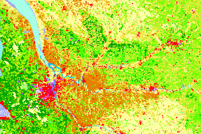

Land Cover Classification#

CORINE (Coordination of Information on the Environment) Land Cover is a European program for developping a standardized methodology for producing continent-scale land cover maps. CORINE Land Cover (CLC) product offers a pan-European land cover and land use inventory with 44 thematic classes, ranging from broad forested areas to individual vineyards. The product is updated with new status and change layers every six years—with the most recent update made in 2018.
In this project Google Earth Engine (GEE) will be used to:
Download Sentinel-2 satellite imagery of the last few years, clipped around an area of interest.
Imagery of a time period (normally a year) will be combined to obtain a clean enough composite image.
The image corresponding to 2018 will be used to train a classification model using the partitions of the land provided by the CORINE Land Cover 2018.
This model will later be used to classify land cover of a more recent image (from 2024), defining over the raster file a band with the class of each pixel on the image, corresponding to the type of land.
Finally, this file will be vectorized (i.e. turn contiguous pixels of the same class into polygons or points), and then exported as GeoJSON for storage and further analysis.
Setup and Initialization#
Show code cell source
import json
import contextily as ctx
import ee # Interface to Google Earth Engine
import geemap # Provides tools for interactive map visualization using GEE
import geopandas as gpd
import matplotlib.colors as mcolors
import matplotlib.pyplot as plt
import numpy as np
import pandas as pd
from shapely.geometry import box
Show code cell source
# Authenticate and initialize the Earth Engine session
ee.Authenticate()
ee.Initialize(project=project_key)
Defining the Study Area#
First, I download municipal boundaries of the province of Gipuzkoa (Spain) from https://b5m.gipuzkoa.eus/web5000/en/datasets/municipal-boundaries
Show code cell source
municipalities = gpd.read_file("data/gipuzkoa_municipios.geojson")
municipalities
| IDNOMBRE | CODMUNI | HERCODI | MUNICIPIO | COMARCA | CODMUNIINE | CODIZFE | F_CARGA | geometry | |
|---|---|---|---|---|---|---|---|---|---|
| 0 | 1.0 | 001 | 30601 | Abaltzisketa | Tolosaldea | 20001 | 001 | 2025-03-30 | POLYGON ((-2.09997 43.01327, -2.11028 43.00989... |
| 1 | 2.0 | 002 | 30602 | Aduna | Tolosaldea | 20002 | 002 | 2025-03-30 | POLYGON ((-2.03897 43.20246, -2.03903 43.20236... |
| 2 | 3.0 | 003 | 30703 | Aizarnazabal | Urola Kosta | 20003 | 003 | 2025-03-30 | POLYGON ((-2.23269 43.25528, -2.23292 43.25502... |
| 3 | 4.0 | 004 | 30604 | Albiztur | Tolosaldea | 20004 | 004 | 2025-03-30 | POLYGON ((-2.17236 43.0978, -2.17219 43.0986, ... |
| 4 | 5.0 | 005 | 30605 | Alegia | Tolosaldea | 20005 | 005 | 2025-03-30 | POLYGON ((-2.06783 43.0784, -2.06961 43.07849,... |
| ... | ... | ... | ... | ... | ... | ... | ... | ... | ... |
| 121 | 88.0 | 088 | 30688 | Gaztelu | Tolosaldea | 20907 | 088 | 2025-03-30 | POLYGON ((-1.99715 43.10179, -1.99668 43.1007,... |
| 122 | 89.0 | 996 | 30996 | Konpantzia / Isla de los Faisanes | None | 20045 | 096 | 2025-03-30 | POLYGON ((-1.76547 43.34261, -1.76549 43.34261... |
| 123 | 90.0 | 997 | 30997 | Gipuzkoako Partzuergo Txikia / Parzonería de G... | None | 20701 | 097 | 2025-03-30 | POLYGON ((-2.23299 42.93214, -2.23293 42.93309... |
| 124 | 91.0 | 998 | 30998 | Enirio-Aralar | None | 20702 | 098 | 2025-03-30 | POLYGON ((-2.10935 42.97064, -2.10939 42.97065... |
| 125 | 92.0 | 999 | 30999 | Gipuzkoa eta Arabako Partzuergo Nagusia / Parz... | None | 20701 | 099 | 2025-03-30 | POLYGON ((-2.23788 42.91304, -2.23851 42.89558... |
126 rows × 9 columns
Then I select one municipality (the one I live in: because I know it well and I will be able to check validity of results!).
Show code cell source
area = municipalities[municipalities["MUNICIPIO"] == "Urretxu"]
area
| IDNOMBRE | CODMUNI | HERCODI | MUNICIPIO | COMARCA | CODMUNIINE | CODIZFE | F_CARGA | geometry | |
|---|---|---|---|---|---|---|---|---|---|
| 100 | 77.0 | 077 | 30577 | Urretxu | Goierri | 20077 | 077 | 2025-03-30 | POLYGON ((-2.33732 43.11191, -2.33727 43.11191... |
Show code cell source
fig, ax = plt.subplots()
municipalities.plot(ax=ax)
area.plot(ax=ax, color="orange")
plt.show()
Show code cell source
area.plot(color="orange")
plt.show()
I will calculate the total bounds of the catchment and create an Earth Engine rectangular geometry that will be used to filter satellite imagery later.
Show code cell source
area_bounds = area.union_all().bounds
area_bounds
(-2.349746183316688,
43.078202771749226,
-2.312124248039057,
43.114457232209624)
Show code cell source
# Create a rectangular polygon (box) from the total bounds
bounds_box = box(area_bounds[0], area_bounds[1], area_bounds[2], area_bounds[3])
# Create corresponding rectangular geodataframe
area_box = gpd.GeoDataFrame(geometry=[bounds_box], crs=area.crs)
fig, ax = plt.subplots()
area.boundary.plot(ax=ax)
area_box.boundary.plot(ax=ax)
plt.show()
Show code cell source
# Create an Earth Engine rectangular ROI: Region Of Interest
roi = ee.Geometry.Rectangle(
[area_bounds[0], area_bounds[1], area_bounds[2], area_bounds[3]]
)
To later overlay the boundary on the map, the GeoDataFrame is converted into a GeoJSON dictionary.
Show code cell source
# From GeoDataFrame to GeoJSON
area_geojson = json.loads(area[["MUNICIPIO", "geometry"]].to_json())
CORINE Land Cover of the Study Area#
In CORINE Land Cover 2018, in “Download by area”, a map opens up with tools to select an area of interest. Here, NUTS can be selected: ES212 is the code of the small region I am interested in: the province in Spain called Gipuzkoa. I download the dataset for this area, selecting VECTOR type, GeoJSON file, and EPSG:4326 projection.
Show code cell source
CLC2018_gipuzkoa = gpd.read_file("data/U2018_CLC2018_V2020_20u1.json")
CLC2018_gipuzkoa
| OBJECTID | Code_18 | Remark | Area_Ha | ID | Shape_Length | Shape_Area | geometry | |
|---|---|---|---|---|---|---|---|---|
| 0 | 263931 | 231 | None | 36.420118 | EU_263931 | 4.692983e+03 | 3.642012e+05 | POLYGON ((-2.22458 42.94839, -2.22646 42.94782... |
| 1 | 263936 | 231 | None | 28.578371 | EU_263936 | 4.283677e+03 | 2.857837e+05 | POLYGON ((-2.29304 42.95019, -2.29319 42.9501,... |
| 2 | 263937 | 231 | None | 33.558522 | EU_263937 | 4.286455e+03 | 3.355852e+05 | POLYGON ((-2.27937 42.94525, -2.27909 42.94516... |
| 3 | 265234 | 243 | None | 32.299053 | EU_265234 | 5.481768e+03 | 3.229905e+05 | POLYGON ((-2.15456 42.96098, -2.15468 42.96095... |
| 4 | 265549 | 311 | None | 70.884837 | EU_265549 | 6.552078e+03 | 7.088484e+05 | POLYGON ((-2.23704 42.91777, -2.23745 42.9196,... |
| ... | ... | ... | ... | ... | ... | ... | ... | ... |
| 1535 | 2362369 | 324 | None | 46.427953 | EU_2362369 | 7.939728e+03 | 4.642795e+05 | POLYGON ((-2.08388 42.99206, -2.08402 42.99209... |
| 1536 | 2362386 | 333 | None | 25.028593 | EU_2362386 | 5.212849e+03 | 2.502859e+05 | POLYGON ((-2.34509 42.95487, -2.34557 42.95519... |
| 1537 | 2362387 | 333 | None | 66.010413 | EU_2362387 | 7.389770e+03 | 6.601041e+05 | POLYGON ((-2.15638 42.97688, -2.15639 42.97689... |
| 1538 | 2362389 | 333 | None | 81.633259 | EU_2362389 | 1.035282e+04 | 8.163326e+05 | POLYGON ((-2.32427 42.95627, -2.32428 42.95634... |
| 1539 | 2362392 | 311 | None | 153307.264721 | EU_2362392 | 6.053437e+06 | 1.533073e+09 | MULTIPOLYGON (((-1.93556 43.10984, -1.93494 43... |
1540 rows × 8 columns
In the downloded package, a file with information about the labels is included.
Show code cell source
labels = pd.read_excel(
"data/clc_legend.xls", usecols=["CLC_CODE", "LABEL1", "LABEL2", "LABEL3"]
)
labels
| CLC_CODE | LABEL1 | LABEL2 | LABEL3 | |
|---|---|---|---|---|
| 0 | 111 | Artificial surfaces | Urban fabric | Continuous urban fabric |
| 1 | 112 | Artificial surfaces | Urban fabric | Discontinuous urban fabric |
| 2 | 121 | Artificial surfaces | Industrial, commercial and transport units | Industrial or commercial units |
| 3 | 122 | Artificial surfaces | Industrial, commercial and transport units | Road and rail networks and associated land |
| 4 | 123 | Artificial surfaces | Industrial, commercial and transport units | Port areas |
| 5 | 124 | Artificial surfaces | Industrial, commercial and transport units | Airports |
| 6 | 131 | Artificial surfaces | Mine, dump and construction sites | Mineral extraction sites |
| 7 | 132 | Artificial surfaces | Mine, dump and construction sites | Dump sites |
| 8 | 133 | Artificial surfaces | Mine, dump and construction sites | Construction sites |
| 9 | 141 | Artificial surfaces | Artificial, non-agricultural vegetated areas | Green urban areas |
| 10 | 142 | Artificial surfaces | Artificial, non-agricultural vegetated areas | Sport and leisure facilities |
| 11 | 211 | Agricultural areas | Arable land | Non-irrigated arable land |
| 12 | 212 | Agricultural areas | Arable land | Permanently irrigated land |
| 13 | 213 | Agricultural areas | Arable land | Rice fields |
| 14 | 221 | Agricultural areas | Permanent crops | Vineyards |
| 15 | 222 | Agricultural areas | Permanent crops | Fruit trees and berry plantations |
| 16 | 223 | Agricultural areas | Permanent crops | Olive groves |
| 17 | 231 | Agricultural areas | Pastures | Pastures |
| 18 | 241 | Agricultural areas | Heterogeneous agricultural areas | Annual crops associated with permanent crops |
| 19 | 242 | Agricultural areas | Heterogeneous agricultural areas | Complex cultivation patterns |
| 20 | 243 | Agricultural areas | Heterogeneous agricultural areas | Land principally occupied by agriculture, with... |
| 21 | 244 | Agricultural areas | Heterogeneous agricultural areas | Agro-forestry areas |
| 22 | 311 | Forest and semi natural areas | Forests | Broad-leaved forest |
| 23 | 312 | Forest and semi natural areas | Forests | Coniferous forest |
| 24 | 313 | Forest and semi natural areas | Forests | Mixed forest |
| 25 | 321 | Forest and semi natural areas | Scrub and/or herbaceous vegetation associations | Natural grasslands |
| 26 | 322 | Forest and semi natural areas | Scrub and/or herbaceous vegetation associations | Moors and heathland |
| 27 | 323 | Forest and semi natural areas | Scrub and/or herbaceous vegetation associations | Sclerophyllous vegetation |
| 28 | 324 | Forest and semi natural areas | Scrub and/or herbaceous vegetation associations | Transitional woodland-shrub |
| 29 | 331 | Forest and semi natural areas | Open spaces with little or no vegetation | Beaches, dunes, sands |
| 30 | 332 | Forest and semi natural areas | Open spaces with little or no vegetation | Bare rocks |
| 31 | 333 | Forest and semi natural areas | Open spaces with little or no vegetation | Sparsely vegetated areas |
| 32 | 334 | Forest and semi natural areas | Open spaces with little or no vegetation | Burnt areas |
| 33 | 335 | Forest and semi natural areas | Open spaces with little or no vegetation | Glaciers and perpetual snow |
| 34 | 411 | Wetlands | Inland wetlands | Inland marshes |
| 35 | 412 | Wetlands | Inland wetlands | Peat bogs |
| 36 | 421 | Wetlands | Maritime wetlands | Salt marshes |
| 37 | 422 | Wetlands | Maritime wetlands | Salines |
| 38 | 423 | Wetlands | Maritime wetlands | Intertidal flats |
| 39 | 511 | Water bodies | Inland waters | Water courses |
| 40 | 512 | Water bodies | Inland waters | Water bodies |
| 41 | 521 | Water bodies | Marine waters | Coastal lagoons |
| 42 | 522 | Water bodies | Marine waters | Estuaries |
| 43 | 523 | Water bodies | Marine waters | Sea and ocean |
| 44 | 999 | NODATA | NODATA | NODATA |
| 45 | 990 | UNCLASSIFIED | UNCLASSIFIED LAND SURFACE | UNCLASSIFIED LAND SURFACE |
| 46 | 995 | UNCLASSIFIED | UNCLASSIFIED WATER BODIES | UNCLASSIFIED WATER BODIES |
| 47 | 990 | UNCLASSIFIED | UNCLASSIFIED | UNCLASSIFIED |
I will prepare lookup dictionaries to easily translate later between code numbers and label strings.
Show code cell source
# LABEL1
code_label1 = {}
for i in range(1, 100):
try:
code_label1[i] = labels.loc[labels["CLC_CODE"] // 100 == i, "LABEL1"].unique()[0]
except:
pass
label1_code = {v: k for k, v in code_label1.items()}
# LABEL2
code_label2 = {}
for i in range(1, 100):
try:
code_label2[i] = labels.loc[labels["CLC_CODE"] // 10 == i, "LABEL2"].unique()[0]
except:
pass
label2_code = {v: k for k, v in code_label2.items()}
# LABEL3
code_label3 = {}
for i in range(1, 1000):
try:
code_label3[i] = labels.loc[labels["CLC_CODE"] == i, "LABEL3"].unique()[0]
except:
pass
label3_code = {v: k for k, v in code_label3.items()}
We can merge both dataframes on the label code.
Show code cell source
# Convert the code column from object to numeric type before merge
CLC2018_gipuzkoa["Code_18"] = CLC2018_gipuzkoa["Code_18"].astype("int64")
# Merge both dataframes
CLC2018_gipuzkoa_labelled = pd.merge(
CLC2018_gipuzkoa, labels, how="left", left_on="Code_18", right_on="CLC_CODE"
)
# Select and rearrange columns of interest
CLC2018_gipuzkoa_labelled = CLC2018_gipuzkoa_labelled.loc[
:, ["CLC_CODE", "LABEL1", "LABEL2", "LABEL3", "Area_Ha", "geometry"]
]
CLC2018_gipuzkoa_labelled
| CLC_CODE | LABEL1 | LABEL2 | LABEL3 | Area_Ha | geometry | |
|---|---|---|---|---|---|---|
| 0 | 231 | Agricultural areas | Pastures | Pastures | 36.420118 | POLYGON ((-2.22458 42.94839, -2.22646 42.94782... |
| 1 | 231 | Agricultural areas | Pastures | Pastures | 28.578371 | POLYGON ((-2.29304 42.95019, -2.29319 42.9501,... |
| 2 | 231 | Agricultural areas | Pastures | Pastures | 33.558522 | POLYGON ((-2.27937 42.94525, -2.27909 42.94516... |
| 3 | 243 | Agricultural areas | Heterogeneous agricultural areas | Land principally occupied by agriculture, with... | 32.299053 | POLYGON ((-2.15456 42.96098, -2.15468 42.96095... |
| 4 | 311 | Forest and semi natural areas | Forests | Broad-leaved forest | 70.884837 | POLYGON ((-2.23704 42.91777, -2.23745 42.9196,... |
| ... | ... | ... | ... | ... | ... | ... |
| 1535 | 324 | Forest and semi natural areas | Scrub and/or herbaceous vegetation associations | Transitional woodland-shrub | 46.427953 | POLYGON ((-2.08388 42.99206, -2.08402 42.99209... |
| 1536 | 333 | Forest and semi natural areas | Open spaces with little or no vegetation | Sparsely vegetated areas | 25.028593 | POLYGON ((-2.34509 42.95487, -2.34557 42.95519... |
| 1537 | 333 | Forest and semi natural areas | Open spaces with little or no vegetation | Sparsely vegetated areas | 66.010413 | POLYGON ((-2.15638 42.97688, -2.15639 42.97689... |
| 1538 | 333 | Forest and semi natural areas | Open spaces with little or no vegetation | Sparsely vegetated areas | 81.633259 | POLYGON ((-2.32427 42.95627, -2.32428 42.95634... |
| 1539 | 311 | Forest and semi natural areas | Forests | Broad-leaved forest | 153307.264721 | MULTIPOLYGON (((-1.93556 43.10984, -1.93494 43... |
1540 rows × 6 columns
Now we can clip our area of interest.
Show code cell source
CLC_area = CLC2018_gipuzkoa_labelled.clip(area_box)
# Select relevant columns
CLC_area = CLC_area.loc[
:, ["CLC_CODE", "LABEL1", "LABEL2", "LABEL3", "Area_Ha", "geometry"]
]
CLC_area
| CLC_CODE | LABEL1 | LABEL2 | LABEL3 | Area_Ha | geometry | |
|---|---|---|---|---|---|---|
| 112 | 121 | Artificial surfaces | Industrial, commercial and transport units | Industrial or commercial units | 208.723071 | POLYGON ((-2.32735 43.07823, -2.32736 43.07826... |
| 171 | 122 | Artificial surfaces | Industrial, commercial and transport units | Road and rail networks and associated land | 121.691580 | POLYGON ((-2.31239 43.08254, -2.31247 43.08281... |
| 286 | 231 | Agricultural areas | Pastures | Pastures | 52.213839 | POLYGON ((-2.34973 43.07897, -2.34969 43.07897... |
| 172 | 122 | Artificial surfaces | Industrial, commercial and transport units | Road and rail networks and associated land | 43.676461 | POLYGON ((-2.33191 43.07883, -2.33324 43.07996... |
| 74 | 112 | Artificial surfaces | Urban fabric | Discontinuous urban fabric | 39.004217 | POLYGON ((-2.31214 43.08313, -2.31216 43.08312... |
| 593 | 311 | Forest and semi natural areas | Forests | Broad-leaved forest | 25.225342 | POLYGON ((-2.34973 43.08633, -2.34966 43.08626... |
| 839 | 312 | Forest and semi natural areas | Forests | Coniferous forest | 65.437249 | POLYGON ((-2.32255 43.08993, -2.32262 43.08995... |
| 1075 | 313 | Forest and semi natural areas | Forests | Mixed forest | 176.826025 | POLYGON ((-2.34974 43.09774, -2.34963 43.09771... |
| 295 | 231 | Agricultural areas | Pastures | Pastures | 131.032916 | POLYGON ((-2.32279 43.09363, -2.32273 43.09358... |
| 43 | 111 | Artificial surfaces | Urban fabric | Continuous urban fabric | 95.744313 | POLYGON ((-2.31213 43.08702, -2.31219 43.0869,... |
| 525 | 243 | Agricultural areas | Heterogeneous agricultural areas | Land principally occupied by agriculture, with... | 35.402475 | POLYGON ((-2.31748 43.1021, -2.31749 43.1021, ... |
| 1080 | 313 | Forest and semi natural areas | Forests | Mixed forest | 60.293866 | POLYGON ((-2.31213 43.10105, -2.31217 43.10103... |
| 307 | 231 | Agricultural areas | Pastures | Pastures | 25.059965 | POLYGON ((-2.32619 43.10452, -2.32624 43.10453... |
| 607 | 311 | Forest and semi natural areas | Forests | Broad-leaved forest | 129.601270 | MULTIPOLYGON (((-2.34221 43.11444, -2.3422 43.... |
| 310 | 231 | Agricultural areas | Pastures | Pastures | 70.840824 | POLYGON ((-2.31213 43.11036, -2.31214 43.11035... |
| 1083 | 313 | Forest and semi natural areas | Forests | Mixed forest | 29.616272 | POLYGON ((-2.32722 43.11444, -2.32727 43.11442... |
| 1012 | 312 | Forest and semi natural areas | Forests | Coniferous forest | 16533.275367 | MULTIPOLYGON (((-2.31913 43.07821, -2.31909 43... |
| 923 | 312 | Forest and semi natural areas | Forests | Coniferous forest | 112.858931 | MULTIPOLYGON (((-2.31212 43.09485, -2.31215 43... |
| 304 | 231 | Agricultural areas | Pastures | Pastures | 103.156250 | MULTIPOLYGON (((-2.31225 43.10377, -2.3123 43.... |
| 1013 | 312 | Forest and semi natural areas | Forests | Coniferous forest | 43681.473480 | MULTIPOLYGON (((-2.34232 43.11444, -2.34232 43... |
And plot the results for the different label levels.
Show code cell source
fig, ax = plt.subplots()
area.boundary.plot(ax=ax, color="black")
legend_kwds = {"loc": "upper left", "bbox_to_anchor": (1, 1.03)}
CLC_area.plot(ax=ax, column="LABEL1", legend=True, legend_kwds=legend_kwds)
plt.show()
Show code cell source
fig, ax = plt.subplots()
area.boundary.plot(ax=ax, color="black")
legend_kwds = {"loc": "upper left", "bbox_to_anchor": (1, 1.03)}
CLC_area.plot(ax=ax, column="LABEL2", legend=True, legend_kwds=legend_kwds)
plt.show()
Show code cell source
fig, ax = plt.subplots()
area.boundary.plot(ax=ax, color="black")
legend_kwds = {"loc": "upper left", "bbox_to_anchor": (1, 1.03)}
CLC_area.plot(ax=ax, column="LABEL3", legend=True, legend_kwds=legend_kwds)
plt.show()
Show code cell source
fig, ax = plt.subplots()
area.boundary.plot(ax=ax, color="black")
CLC_area.boundary.plot(ax=ax)
ctx.add_basemap(ax, crs=CLC_area.crs, source="OpenStreetMap.Mapnik")
plt.show()
According to the context map and my personal knowledge of the area, these classification of land provided by CORINE Land Cover 2018 seems to be correct.
Satellite Imagery: Cloud and Shadow Masking#
We will proceed now with the workflow for processing satellite imagery.
The following function masks clouds and their shadows from Sentinel-2 images by using:
The
QA60band to mask clouds and cirrus clouds through bitwise operations.The
SCLband (Scene Classification Layer) to mask out shadow pixels and additional cloud artifacts.After creating individual masks, they are combined.
Then, a smoothing process using dilation (
focal_max) followed by erosion (focal_min) is applied to soften the mask’s edges.Finally, the image is masked and normalized (dividing the reflectance values by 10,000).
Show code cell source
def mask_s2_clouds_and_shadows(image):
"""Mask clouds and shadows from a Sentinel-2 image and soften edges."""
qa = image.select("QA60") # Select cloud mask
cloud_bit_mask = 1 << 10 # Bit 10: clouds
cirrus_bit_mask = 1 << 11 # Bit 11: cirrus
cloud_mask = (
qa.bitwiseAnd(cloud_bit_mask).eq(0).And(qa.bitwiseAnd(cirrus_bit_mask).eq(0))
)
scl = image.select("SCL") # Select shadows mask
shadow_mask = scl.neq(3) # Pixels that are not cloud shadows
cloud_class_mask = scl.neq(9) # Pixels that are not clouds
# Combine both masks
final_mask = cloud_mask.And(shadow_mask).And(cloud_class_mask)
# Softening of mask edges using dilation and erosion
dilated_mask = final_mask.focal_max(
radius=50, units="meters"
) # Dilation (expands the mask)
smoothed_mask = dilated_mask.focal_min(
radius=50, units="meters"
) # Erosion (reduces the mask)
# Mask the image and normalize
return image.updateMask(smoothed_mask).divide(10000)
The following helper function calls the previous cloud/shadow masking function and then selects only the relevant bands for visualization (B4, B3, B2 corresponding to red, green, and blue).
Show code cell source
def prepare_image(image):
"""Call cloud and shadows masking function and select relevant bands for visualization."""
bands = ["B4", "B3", "B2"] # RGB bands
return mask_s2_clouds_and_shadows(image).select(bands)
Creating Composited Images for Different Years#
For each time period the following steps are taken:
Filtering the Sentinel-2 Collection: images from the “COPERNICUS/S2_SR_HARMONIZED” collection are filtered by date range, cloud coverage (only images with less than 20% cloud cover) and intersection with the ROI.
Applying Preprocessing: The
prepare_imagefunction is mapped over the image collection to remove clouds/shadows and select the RGB bands.Creating a Mosaic: the collection is reduced with a minimum reducer (
ee.Reducer.min()) to create a single clean mosaic for that period. This effectively creates a composite image that picks the lowest reflectance value for each pixel (which is common for reducing cloud effects).
A visualization dictionary is defined for rendering the RGB composites with set minimum and maximum values. These mosaics are then added as separate layers on an interactive geemap instance, which allows the user to visually compare the images from different years over the catchment area.
Show code cell source
image_collection = "COPERNICUS/S2_SR_HARMONIZED"
cloudy_pixel_percentage = 20 # Less than 20% cloudy pixels
periods = [
("2018-01-01", "2018-12-31"),
("2024-01-01", "2024-12-31"),
]
clean_images = []
for period in periods:
# Get dataset
dataset = (
ee.ImageCollection(image_collection)
.filterDate(period[0], period[1])
.filter(ee.Filter.lt("CLOUDY_PIXEL_PERCENTAGE", cloudy_pixel_percentage))
.filterBounds(roi) # Region Of Interest
.map(prepare_image) # Apply masks, select bands
)
# Composite image: create a single clean mosaic
clean_images.append(dataset.reduce(ee.Reducer.min()))
Show code cell source
# Create map
m = geemap.Map()
# Center the map in the area
m.set_center(
(area_bounds[0] + area_bounds[2]) / 2, # lon
(area_bounds[1] + area_bounds[3]) / 2, # lat
14,
) # The zoom level, from 0 to 24
# Visualization configuration
visualization = {
"min": 0.0,
"max": 0.3,
"bands": ["B4_min", "B3_min", "B2_min"],
}
# Add to the map clean image mosaics
for clean_image, period in zip(clean_images, periods):
m.add_layer(clean_image.clip(roi), visualization, name=period[0] + "/" + period[1])
# Add boundary of the area
m.add_geojson(
area_geojson,
layer_name="Area",
style={"color": "red", "weight": 2, "fillColor": "#FFFFFF00", "fillOpacity": 0},
)
# Show map
m
Preparing Land Cover Samples and Training the model#
LABEL1 type Land Cover Samples for the area of interest will be converted into GEE feature collections.
Show code cell source
# Generate GeoJSON for each land type (each class)
gjsons, classes = [], []
for label in code_label1.values():
if CLC_area["LABEL1"].str.contains(label).any():
gdf = CLC_area.loc[
CLC_area["LABEL1"] == label, ["geometry"]
] # Include geometry
gdf["class"] = label1_code[label] # Add class property
geojson = json.loads(gdf.to_json())
gjsons.append(geojson)
classes.append(label1_code[label])
# Generate GEE feature collections
featurecollections = []
for gjson in gjsons: # For each label class
features = []
for feature in gjson["features"]: # For each geometry in that particular class
features.append(
ee.Feature(
ee.Geometry.Polygon(feature["geometry"]["coordinates"][0]),
{"class": feature["properties"]["class"]},
)
)
featurecollections.append(ee.FeatureCollection(features))
# Combined feature collections
featurecollections_samples = ee.FeatureCollection(featurecollections).flatten()
These features collections will be served as sample regions to a model to be trained on the image from 2018.
Show code cell source
clean_image_2018 = clean_images[0] # Image of 2018
training_data = clean_image_2018.sampleRegions(
collection=featurecollections_samples, # Training dataset
properties=["class"], # Class property
scale=30, # Spatial resolution in meters
)
n_trees = 50
classifier = ee.Classifier.smileRandomForest(n_trees).train(
features=training_data,
classProperty="class", # The class of interest to predict
inputProperties=clean_image.bandNames(), # Bands used as input
)
We can now call the model to add land type classification band on the images.
Show code cell source
clean_image_2024 = clean_images[1] # Image of 2024
classified_image_2024 = clean_image_2024.classify(classifier)
# We can also apply the classifier to the image used in training
classified_image_2018 = clean_image_2018.classify(classifier)
And show results in a map.
Show code cell source
# Create map
Map = geemap.Map()
Map.centerObject(roi, 14)
visparams = {
"min": min(classes),
"max": max(classes),
"palette": list(mcolors.TABLEAU_COLORS.values())[: len(classes)],
}
Map.add_layer(clean_image_2018.clip(roi), visualization, "Image 2018")
Map.add_layer(classified_image_2018.clip(roi), visparams, "Land Cover 2018")
Map.add_layer(classified_image_2024.clip(roi), visparams, "Land Cover 2024")
Map.add_geojson(
area_geojson,
layer_name="Area",
style={"color": "black", "weight": 2, "fillColor": "#FFFFFF00", "fillOpacity": 0},
)
# Show map
Map
Export classified map (GeoJSON)#
First, the classification image needs to be vectorized according to the band called
classification, which holds the class numbers.Then the file is exported to Google Drive in GeoJSON format.
Show code cell source
classified_images = [
(classified_image_2018, "classified_image_2018"),
(classified_image_2024, "classified_image_2024"),
]
def export_geojson(classified_image, filename):
# Vectorize classification image
vectors = classified_image.select("classification").reduceToVectors(
geometry=roi,
scale=10, # Sentinel-2 image resolution: 10 m/px
geometryType="polygon", # "centroid" if you want points instead
eightConnected=False,
labelProperty="class", # the attribute name on each feature
reducer=ee.Reducer.countEvery(),
)
# Export to Google Drive
task = ee.batch.Export.table.toDrive(
**{
"collection": vectors,
"description": "classified_image_export",
# "folder": "geojson",
"fileNamePrefix": filename,
"fileFormat": "GeoJSON",
}
)
task.start()
return task
for classified_image, name in classified_images:
export_geojson(classified_image, name)
Analyzing Results#
Exported GeoJSON files will be converted into GeoDataframes to perform analysis.
Show code cell source
classified_2024 = gpd.read_file("classified_image_2024.geojson")[["class", "geometry"]]
classified_2024["label"] = classified_2024["class"].apply(lambda x: code_label1[x])
classified_2024 = classified_2024.clip(area)
classified_2024
| class | geometry | label | |
|---|---|---|---|
| 3695 | 3 | MULTIPOLYGON (((-2.33014 43.07943, -2.33014 43... | Forest and semi natural areas |
| 3728 | 3 | POLYGON ((-2.33059 43.07997, -2.33041 43.07997... | Forest and semi natural areas |
| 3761 | 2 | POLYGON ((-2.33059 43.07997, -2.33059 43.07993... | Agricultural areas |
| 3923 | 2 | POLYGON ((-2.33194 43.08042, -2.33185 43.08042... | Agricultural areas |
| 3843 | 3 | POLYGON ((-2.33122 43.08033, -2.33131 43.08033... | Forest and semi natural areas |
| ... | ... | ... | ... |
| 3400 | 1 | POLYGON ((-2.32861 43.1132, -2.32852 43.1132, ... | Artificial surfaces |
| 3205 | 2 | POLYGON ((-2.32762 43.11347, -2.32753 43.11347... | Agricultural areas |
| 3144 | 1 | POLYGON ((-2.32727 43.11365, -2.32727 43.11356... | Artificial surfaces |
| 3145 | 2 | POLYGON ((-2.32745 43.11374, -2.32745 43.11378... | Agricultural areas |
| 3220 | 2 | POLYGON ((-2.3278 43.11383, -2.3278 43.11384, ... | Agricultural areas |
4059 rows × 3 columns
Show code cell source
classified_2018 = gpd.read_file("classified_image_2018.geojson")[["class", "geometry"]]
classified_2018["label"] = classified_2018["class"].apply(lambda x: code_label1[x])
classified_2018 = classified_2018.clip(area)
classified_2018
| class | geometry | label | |
|---|---|---|---|
| 4626 | 2 | POLYGON ((-2.33589 43.08419, -2.33571 43.08419... | Agricultural areas |
| 4663 | 2 | POLYGON ((-2.33598 43.08428, -2.33589 43.08428... | Agricultural areas |
| 4675 | 1 | POLYGON ((-2.33625 43.08428, -2.33634 43.08428... | Artificial surfaces |
| 4627 | 2 | POLYGON ((-2.33589 43.08446, -2.33571 43.08446... | Agricultural areas |
| 4699 | 2 | POLYGON ((-2.33625 43.08473, -2.33607 43.08473... | Agricultural areas |
| ... | ... | ... | ... |
| 2010 | 2 | MULTIPOLYGON (((-2.32268 43.11114, -2.32268 43... | Agricultural areas |
| 2317 | 2 | POLYGON ((-2.32322 43.11177, -2.32313 43.11177... | Agricultural areas |
| 2252 | 3 | POLYGON ((-2.32304 43.11186, -2.32304 43.11195... | Forest and semi natural areas |
| 2318 | 2 | POLYGON ((-2.32313 43.1124, -2.32322 43.1124, ... | Agricultural areas |
| 2319 | 2 | POLYGON ((-2.32322 43.11258, -2.32322 43.11266... | Agricultural areas |
4258 rows × 3 columns
Show code cell source
fig, ax = plt.subplots(1, 3, sharey=True, figsize=(10, 6))
legend_kwds = {"loc": "upper left", "bbox_to_anchor": (1, 1.03)}
CLC_area.clip(area).plot(ax=ax[0], column="LABEL1")
classified_2018.plot(ax=ax[1], column="label")
classified_2024.plot(ax=ax[2], column="label", legend=True, legend_kwds=legend_kwds)
ax[0].set_title("CORINE Land Cover 2018", fontsize=11)
ax[1].set_title("Classified from Imagery 2018", fontsize=11)
ax[2].set_title("Classified from Imagery 2024", fontsize=11)
plt.show()
For example, we could calculate how forests have changed in this period. My impression was that tree covered land had receded.
Show code cell source
forests_2018_ha = (
classified_2018[classified_2018["label"] == "Forest and semi natural areas"]
.to_crs(3857)
.union_all()
.area
/ 10000
)
print(f"Forests in 2018 -> {forests_2018_ha:.0f} hectares")
Forests in 2018 -> 972 hectares
Show code cell source
forests_2024_ha = (
classified_2024[classified_2024["label"] == "Forest and semi natural areas"]
.to_crs(3857)
.union_all()
.area
/ 10000
)
print(f"Forests in 2024 -> {forests_2024_ha:.0f} hectares")
Forests in 2024 -> 899 hectares
So indeed, forests seem to be declining.
Show code cell source
print(f"Forest area change -> {(forests_2024_ha - forests_2018_ha):.0f} hectares")
Forest area change -> -74 hectares